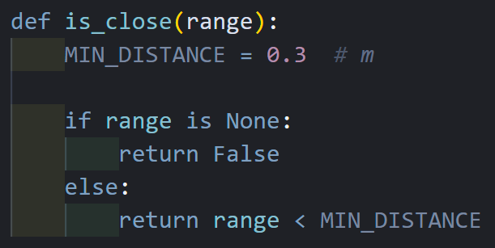
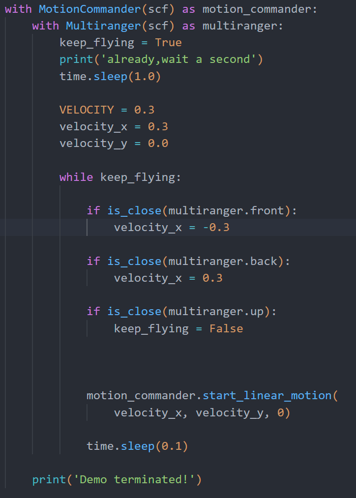

实验 5: 测距进阶
Advanced Ranging Experiment
运行前确认小组 URI
本实验的 Python 脚本统一从环境变量 CFLIB_URI 读取实验 3 中分配的完整 radio URI，不需要把小组地址重复写入每个代码文件。打开新终端后先执行：
echo "$CFLIB_URI"输出必须与本组标签上的完整 URI 完全一致，包括接口编号、channel、速率和 address。若输出为空或不正确，请返回实验 3 的“将完整 URI 保存到虚拟机”步骤重新设置；确认无误后再运行本实验脚本。
一、实验目标
继续熟悉cflib库中multiranger传感器相关的编程方法。
使用multiranger传感器实现更多有趣的飞行任务
二、实验准备
之前已经配置好连接到无人机的客户端的虚拟机系统。并且需要具备前几门实验已经积累的linux系统操作经验。再需要一点的python编程基础。
本实验中需要用到的硬件设备：
- Crazyflie 2.0
- Crazyradio PA
- Flow deck
- Multiranger deck
三、实验步骤
本次实验将主要进行python脚本的运行，编程库参考资料可直接打开 Bitcraze cflib User Guides：
https://www.bitcraze.io/documentation/repository/crazyflie-lib-python/master/user-guides/若在进行实验中遇到困难，可直接打开上述网址进一步参考。同时部分操作和知识要点也在上节课的实验手册中有提及，如有不会的地方可以再参考上节的实验手册，这部分操作这节实验手册不再赘述。
实验一：起飞前进，检测到障碍降落
上节课的内容，大家学会了单独调用multiranger模块查看其参数，以及运行了一个现成的程序实现了“推动”无人机的效果。接下来同学们将跟着示例程序，自己从基础，一步一步地编程实现特定的功能。
接下来给出一个可以运行的完整的示例程序，今天基于multiranger模块的相关编程，都可以以此为模板进行进一步的代码编写。
下载经审核的完整脚本: multiranger_stop.py
#!/usr/bin/env python3
"""Fly forward slowly and land before the front obstacle."""
import threading
import time
import cflib.crtp
from cflib.crazyflie import Crazyflie
from cflib.crazyflie.syncCrazyflie import SyncCrazyflie
from cflib.positioning.motion_commander import MotionCommander
from cflib.utils import uri_helper
from cflib.utils.multiranger import Multiranger
URI = uri_helper.uri_from_env(default="")
FRONT_STOP_DISTANCE_M = 0.28
UP_STOP_DISTANCE_M = 0.15
FORWARD_SPEED_MPS = 0.10
MAX_FLIGHT_TIME_S = 20.0
def request_arming(scf, armed):
for service_name in ("platform", "supervisor"):
service = getattr(scf.cf, service_name, None)
request = getattr(service, "send_arming_request", None)
if request is not None:
request(armed)
return
raise RuntimeError("This cflib version has no arming service.")
def wait_for_decks(scf):
attached = {
"bcFlow2": threading.Event(),
"bcMultiranger": threading.Event(),
}
def callback(name, value):
deck_name = name.rsplit(".", 1)[-1]
if deck_name in attached and int(value):
attached[deck_name].set()
for deck_name in attached:
scf.cf.param.add_update_callback(
group="deck", name=deck_name, cb=callback
)
time.sleep(1.0)
return all(event.wait(timeout=4.0) for event in attached.values())
def main():
if not URI:
raise RuntimeError("CFLIB_URI is empty; configure the group URI first.")
cflib.crtp.init_drivers()
with SyncCrazyflie(URI, cf=Crazyflie(rw_cache="./cache")) as scf:
if not wait_for_decks(scf):
raise RuntimeError(
"Flow deck or Multi-ranger deck was not detected; takeoff cancelled."
)
armed = False
try:
request_arming(scf, True)
armed = True
time.sleep(1.0)
with MotionCommander(scf, default_height=0.35) as commander:
with Multiranger(scf) as multiranger:
deadline = time.monotonic() + MAX_FLIGHT_TIME_S
while time.monotonic() < deadline:
front = multiranger.front
up = multiranger.up
should_stop = (
up is not None and up < UP_STOP_DISTANCE_M
) or (
front is not None and front < FRONT_STOP_DISTANCE_M
)
if should_stop:
commander.stop()
break
commander.start_forward(FORWARD_SPEED_MPS)
time.sleep(0.1)
commander.stop()
finally:
if armed:
request_arming(scf, False)
if __name__ == "__main__":
main()
该代码实现了一个简单的功能，无人机起飞，稳定姿态1秒后以0.3m每秒的速度向前飞行，直到检测到无人机前方0.4m内有障碍物，则会停止前进并且降落。
程序执行流程
启动程序 → 连接无人机 → 解锁准备
开始飞行 → 以0.3米/秒速度向前飞行
持续检测 → 每0.1秒检查一次前方和上方
遇到障碍 → 如果前方和上方距离小于40厘米就停止飞行
结束任务 → 打印"Demo terminated!"
同学们需要理解该代码中必要的一些语句，首先对于is_close这个函数，该函数定义了一个变量值为0.3，该函数将会返回multiranger传感器在某个方向上是否在某个距离内检测到障碍物，调用方法可以参考代码内该函数被调用的位置以及传入的参数。MIN_DISTANCE定义的距离0.3则代表了该函数将会在multiranger传感器在某个方向上的0.3m内检测到障碍物之后返回确定的值。

同时，对于主程序中的while循环，一直在判断一个叫做keep_flying的标志位，该标志位为true时，while循环将会一直循环执行下面的语句（直到time.sleep（0.1）那一条语句）。当while语句结束，也就是keep_flying的标志位被置为false则跳出while循环，执行while循环之后的代码，也就是print语句，同时，motioncommander类也会因为被顺序执行完毕自动销毁，无人机会自动降落。这就是这个代码的原理。
实验二：前后往返
接下来，把motioncommander类里的代码内容换成如下内容：

在运行该代码之前，将无人机放在两堵墙之间，无人机的前方垂直于两堵墙。运行效果为无人机将会在两面墙之间来回“弹跳”，想一想这个过程中，代码里有哪些参数修改了之后，会对无人机的运行效果造成怎样的影响？同样地，我们保留了若无人机检测到上方有物体时，也会自动降落的功能，该代码运行时，若不手动停止或者上方检测到障碍物，无人机将会在两面墙之间一直来回“弹跳”，希望同学们可以理解这个代码的原理为后面做铺垫。
实验三：在一个盒子里“弹跳”
运行下面完整的代码（也就是Bouncing_box.py）：
注意，运行该代码前尽量将无人机放在运行场地中心的位置，该代码主要调用了flowdeck模块的功能实现视觉导航和定位，没有用到multiranger的功能。让无人机实现在一个正方形的区域内“弹跳”，即每次接触到这个看不见的正方形边界之后，无人机在x与y方向上的速度方向改变，达到一个“回头弹跳”的效果。
因为使用的是flowdeck的功能，所以只在没有反光的场地上运行的效果最好，同样地会在这片看不见的正方形区域上无限弹跳，直到手动停止程序。BOX_LIMIT = 0.3则设置的是该正方形区域的大小，同学们可以适当修改这个值，注意起飞时最好放在场地中间。
下载经审核的完整脚本: flow_box_bounce.py
#!/usr/bin/env python3
"""Bounded Flow-deck position exercise with stale-log and time limits."""
import threading
import time
import cflib.crtp
from cflib.crazyflie import Crazyflie
from cflib.crazyflie.log import LogConfig
from cflib.crazyflie.syncCrazyflie import SyncCrazyflie
from cflib.positioning.motion_commander import MotionCommander
from cflib.utils import uri_helper
URI = uri_helper.uri_from_env(default="")
DEFAULT_HEIGHT_M = 0.35
BOX_LIMIT_M = 0.35
MAX_VELOCITY_MPS = 0.15
MAX_FLIGHT_TIME_S = 45.0
LOG_STALE_TIMEOUT_S = 0.60
flow_deck_attached = threading.Event()
position_lock = threading.Lock()
position_estimate = [0.0, 0.0]
last_position_update = 0.0
def request_arming(scf, armed):
for service_name in ("platform", "supervisor"):
service = getattr(scf.cf, service_name, None)
request = getattr(service, "send_arming_request", None)
if request is not None:
request(armed)
return
raise RuntimeError("This cflib version has no arming service.")
def flow_deck_callback(name, value):
if int(value):
flow_deck_attached.set()
def position_callback(timestamp, data, log_config):
global last_position_update
with position_lock:
position_estimate[0] = float(data["stateEstimate.x"])
position_estimate[1] = float(data["stateEstimate.y"])
last_position_update = time.monotonic()
def move_box_limit(scf):
body_x = MAX_VELOCITY_MPS
body_y = MAX_VELOCITY_MPS * 0.5
deadline = time.monotonic() + MAX_FLIGHT_TIME_S
with MotionCommander(scf, default_height=DEFAULT_HEIGHT_M) as commander:
while time.monotonic() < deadline:
with position_lock:
x, y = position_estimate
update_age = time.monotonic() - last_position_update
if update_age > LOG_STALE_TIMEOUT_S:
commander.stop()
raise RuntimeError("Position log is stale; landing.")
if x >= BOX_LIMIT_M:
body_x = -MAX_VELOCITY_MPS
elif x <= -BOX_LIMIT_M:
body_x = MAX_VELOCITY_MPS
if y >= BOX_LIMIT_M:
body_y = -MAX_VELOCITY_MPS
elif y <= -BOX_LIMIT_M:
body_y = MAX_VELOCITY_MPS
commander.start_linear_motion(body_x, body_y, 0.0)
time.sleep(0.1)
commander.stop()
def main():
if not URI:
raise RuntimeError("CFLIB_URI is empty; configure the group URI first.")
cflib.crtp.init_drivers()
with SyncCrazyflie(URI, cf=Crazyflie(rw_cache="./cache")) as scf:
scf.cf.param.add_update_callback(
group="deck", name="bcFlow2", cb=flow_deck_callback
)
time.sleep(1.0)
if not flow_deck_attached.wait(timeout=5.0):
raise RuntimeError("Flow deck was not detected; takeoff cancelled.")
position_log = LogConfig(name="Position", period_in_ms=1000)
position_log.add_variable("stateEstimate.x", "float")
position_log.add_variable("stateEstimate.y", "float")
scf.cf.log.add_config(position_log)
position_log.data_received_cb.add_callback(position_callback)
log_started = False
armed = False
try:
position_log.start()
log_started = True
if not wait_for_first_position(timeout=2.0):
raise RuntimeError("No position log data; takeoff cancelled.")
request_arming(scf, True)
armed = True
time.sleep(1.0)
move_box_limit(scf)
finally:
if log_started:
position_log.stop()
if armed:
request_arming(scf, False)
def wait_for_first_position(timeout):
deadline = time.monotonic() + timeout
while time.monotonic() < deadline:
with position_lock:
if last_position_update > 0.0:
return True
time.sleep(0.05)
return False
if __name__ == "__main__":
main()
接下来提出的要求将会具有一定的挑战性，根据前面学到的对multiranger的使用，我们使其在由真实墙面组成的一个正方形区域中，使用multiranger模块实现上述“盒子弹跳”的功能，实现的效果中，无人机是一定不会与墙面发生碰撞的。在此也给出提示，注意无人机的飞行速度和方向值的设置都参考一下上述的代码
实验四（拓展选做）：沿墙飞行
唯一代码来源：Bitcraze 官方示例
本实验直接使用 Bitcraze 官方 crazyflie-demos 仓库中的沿墙示例，不再提供另一套课堂沿墙脚本。官方示例目录内的 multiranger_wall_following.py 和 wall_following.py 是同一程序的入口与状态机依赖，必须保留在同一目录中。
首次使用时克隆官方仓库并进入示例目录；已经下载过 crazyflie-demos 的小组只需进入对应目录，不要再次复制脚本。
cd ~/workspace
git clone https://github.com/bitcraze/crazyflie-demos.git
cd crazyflie-demos/demos/scripts/cflib/multiranger/multiranger_wall_following
echo "$CFLIB_URI"在官方 multiranger_wall_following.py 中，仅将 WallFollowing(...) 初始化改为以下推荐参数。reference_distance_from_wall + ranger_value_buffer = 0.24 m，即前方测距低于约 0.24 m 时进入转角处理。
wall_following = WallFollowing(
angle_value_buffer=0.1,
reference_distance_from_wall=0.18,
max_forward_speed=0.08,
max_turn_rate=0.35,
ranger_value_buffer=0.06,
range_lost_threshold=0.30,
init_state=WallFollowing.StateWallFollowing.FORWARD)跟随左墙时使用官方示例中的 RIGHT + left_range 组合；跟随右墙时使用 LEFT + right_range 组合。这里的方向表示转向方向，不是墙位于机体哪一侧。两组配置只保留实际需要的一组。
# 跟随左墙
wall_following_direction = WallFollowing.WallFollowingDirection.RIGHT
side_range = left_range
# 跟随右墙
wall_following_direction = WallFollowing.WallFollowingDirection.LEFT
side_range = right_range确认 CFLIB_URI 为本组完整地址后，在当前官方示例目录运行：
python3 multiranger_wall_following.py适用条件与首次测试
官方示例明确适用于带转角的连续直墙。挡板接缝、低矮障碍和大面积开口可能造成单点测距短暂丢失，因此应先覆盖明显接缝，在低速直墙环境核对跟墙侧、转向方向及上方手势停止，再进入 40-50 cm 通道。飞行期间由一名组员专门观察并随时准备停止实验。
该代码主要实现无人机沿着墙面走的功能，以达到沿着墙面探索的目的，同学们可以以此感受一下无人机自主探索的概念，为之后的课程做好铺垫。
飞行记录参考
复盘测距进阶实验时，应将飞行动作、测距阈值和安全边界一并核对。